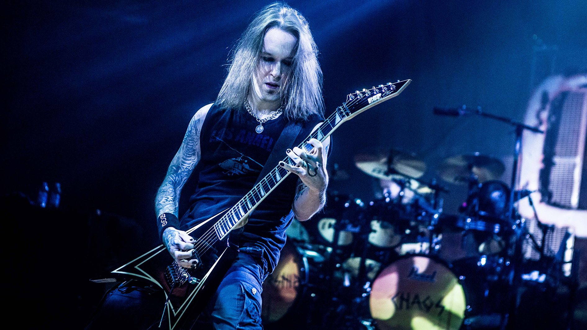
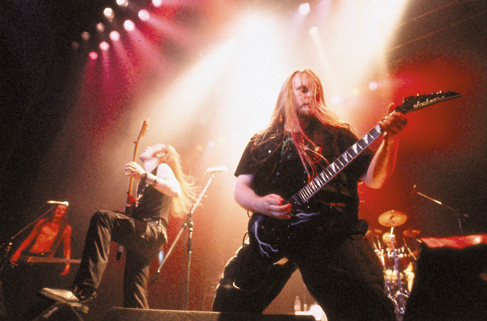
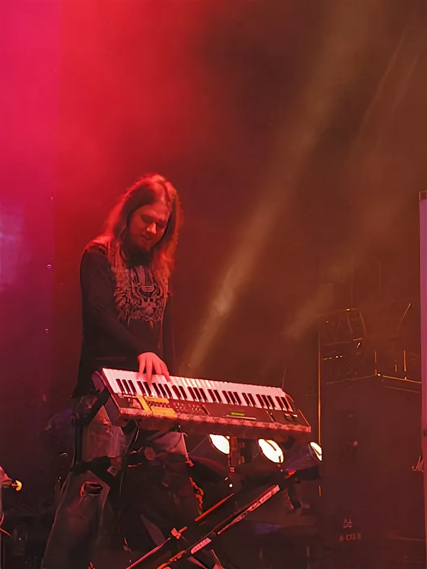

Children of Bodom — культовая финская метал-группа, основанная в 1993 году в городе Эспоо. Изначально коллектив назывался Inearthed, но позже был переименован в честь трагических событий у озера Бодом — одного из самых известных нераскрытых дел в истории Финляндии. Основателями группы стали Алексей Лайхо (гитара, вокал) и Янне Вирман (клавишные). С самого начала Children of Bodom выделялись уникальным стилем: сочетание мелодичного дэт-метала, трэш-метала и неоклассических гитарных партий, вдохновлённых хэви-металом 80-х и классической музыкой. Это сделало их звучание узнаваемым по всему миру.
Первый студийный альбом «Something Wild» (1997) мгновенно привлёк внимание метал-сцены, а последующие релизы — «Hatebreeder» (1999), «Follow the Reaper» (2000) и «Hate Crew Deathroll» (2003) — закрепили за группой статус одной из главных представителей финского металла. Их песни сочетали агрессию, техничность и мелодичность, чего редко удавалось добиться другим коллективам. Children of Bodom завоевали признание не только в Европе, но и в США и Японии, регулярно выступая на крупнейших фестивалях, таких как Wacken Open Air, Download Festival и Ozzfest. Они сильно повлияли на развитие мелодичного дэт-метала и вдохновили сотни молодых групп по всему миру. В 2019 году группа официально прекратила существование. В 2020 году мир потерял Алексея Лайхо — человека, который стал настоящей иконой современного метала. Несмотря на это, наследие Children of Bodom продолжает жить в их музыке, в памяти фанатов и в бесчисленных музыкантах, вдохновлённых их творчеством. Children of Bodom — не просто группа. Это эпоха.



Дебютный альбом, задавший тон.
Классика жанра, демонстрирующая виртуозность.
Прорывной альбом с мощными хитами.